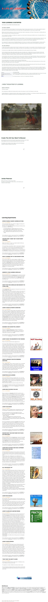

A Life Of Learning on Strikingly
In modern culture school, you learned to learn for others. You learned to learn for the teacher, or for your parents. You have wired learning as a mean to survive by being safe from punishement, shame, humiliation, and conflit. Or you wired learning as a mean to receive praise, love, attention and rewards.
In that sense, you are crippled. Learning is twisted and contaminated with many other purposes than the joy of Learning.
You have associated writing, reading, asking questions, being curious with walking across a minefield. How do you give the teacher what they want without ever crossing the line into the domain of the Unknown? The teacher shot you down, humiliated you, punished you when you step out of the curriculum path. Teachers are terrified of Unknown, when their power rely on being the One Who Knows.
You have learned to learn to pass tests. The instant the test is done, you have trained your mind to forget all information. Today, you might still have the same strategy when you listen or are being with, scanning for the information to memorise, mimicking the 'authority figure' so that when the test come you are ready. The result is that you keep learning in and from your mind at bay from your Heart or Soul.
You have been trained to center Learning on the value of Knowing The Right Answer.
Knowing The Right Answer is at odds with a Path of Transformation. For a Life on the Path, Learning is about becoming someone new. And you cannot Know who you will become when you enter a Liquid State.
On the Path, Learning is partly about what you do not know. But mostly, Learning is about discovering what you don't know that you don't know about. And to learn what you don't know you don't know about you first have to admit you don't know.
This might easier said than done. The moment you are willing to admit that you do not know of what you do not know about, you abandon 14 years of emprisonment in a system that has given you close to nothing. It is appropriate to grieve the loss of those years as a child, and young adult. Those years could have been about discovering the life you wanted to create for yourself. Those years could have focused on learning the skills and processes to deliver your Archetypal Lineage to your Circle of people.
You will not only experience Grief, you will experience Rage.
And you will experience Fear, when you leave behind the safety of the Right Answer. There is no longer any authority figure that can tell you; this is good, this is bad, you should do this and not this. The responsibility of what you think, what you say, what you do and do not do is on you.
The invitation is to change your purpose of learning: Learning is to make use of the opportunity of Being Alive.